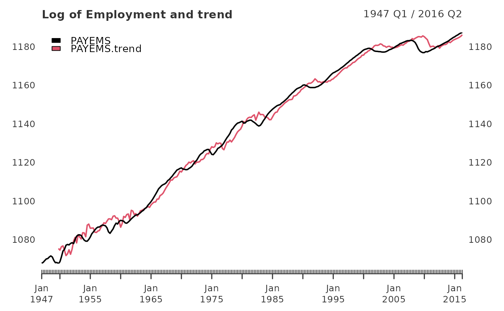

yth_filter returns an xts object containing user defined
combinations of the original, trend, cycle, and random walk series.
yth_filter(x, h = 8, p = 4, output = c("x", "trend", "cycle", "random"), ...)
| x | A univariate |
|---|---|
| h | An |
| p | An |
| output | A |
| ... | other arguments passed to the function |
An xts object defined by the output parameter.
For time series of quarterly periodicity, Hamilton suggests parameters of h = 8 and p = 4, or an \(AR(4)\) process, additionally lagged by \(8\) lookahead periods. Econometricians may explore variations of h. However, p is designed to correspond with the seasonality of a given periodicity and should be matched accordingly. $$y_{t+h} = \beta_0 + \beta_1 y_t + \beta_2 y_{t-1} + \beta_3 y_{t-2} + \beta_4 y_{t-3} + v_{t+h}$$ $$\hat{v}_{t+h} = y_{t+h} - \hat{\beta}_0 + \hat{\beta}_1 y_t + \hat{\beta}_2 y_{t-1} + \hat{\beta}_3 y_{t-2} + \hat{\beta}_4 y_{t-3}$$ Which can be rewritten as: $$y_{t} = \beta_0 + \beta_1 y_{t-8} + \beta_2 y_{t-9} + \beta_3 y_{t-10} + \beta_4 y_{t-11} + v_{t}$$ $$\hat{v}_{t} = y_{t} - \hat{\beta}_0 + \hat{\beta}_1 y_{t-8} + \hat{\beta}_2 y_{t-9} + \hat{\beta}_3 y_{t-10} + \hat{\beta}_4 y_{t-11}$$
James D. Hamilton. Why You Should Never Use the Hodrick-Prescott Filter. NBER Working Paper No. 23429, Issued in May 2017.
data(GDPC1) gdp_filter <- yth_filter(100*log(GDPC1), h = 8, p = 4) knitr::kable(head(gdp_filter, 15), align = 'l')#> #> #> |GDPC1 |GDPC1.trend |GDPC1.cycle |GDPC1.random | #> |:--------|:-----------|:-----------|:------------| #> |756.7589 |NA |NA |NA | #> |756.6456 |NA |NA |NA | #> |756.5438 |NA |NA |NA | #> |758.1059 |NA |NA |NA | #> |759.5656 |NA |NA |NA | #> |761.1769 |NA |NA |NA | #> |761.7344 |NA |NA |NA | #> |761.8413 |NA |NA |NA | #> |760.4656 |NA |NA |3.706722 | #> |760.1296 |NA |NA |3.483993 | #> |761.2237 |NA |NA |4.679850 | #> |760.3226 |767.7108 |-7.3881789 |2.216688 | #> |764.2313 |768.8676 |-4.6363677 |4.665638 | #> |767.2102 |770.0248 |-2.8145073 |6.033379 | #> |770.9919 |770.3687 |0.6232593 |9.257513 |#---------------------------------------------------------------------------# data(PAYEMS) log_Employment <- 100*log(xts::to.quarterly(PAYEMS["1947/2016-6"], OHLC = FALSE)) employ_trend <- yth_filter(log_Employment, h = 8, p = 4, output = c("x", "trend")) plot(employ_trend, grid.col = "white", legend.loc = "topleft", main = "Log of Employment and trend")#----------------------------------------------------------------------------# quarterly_data <- 100*log(merge(GDPC1, PCECC96, GPDIC1, EXPGSC1, IMPGSC1, GCEC1, GDPDEF)) cycle <- do.call(merge, lapply(quarterly_data, yth_filter, output = "cycle")) random <- do.call(merge, lapply(quarterly_data, yth_filter, output = "random")) cycle.sd <- t(data.frame(lapply(cycle, sd, na.rm = TRUE))) GDP.cor <- t(data.frame(lapply(cycle, cor, cycle[,1], use = "complete.obs"))) random.sd <- t(data.frame(lapply(random, sd, na.rm = TRUE))) random.cor <- t(data.frame(lapply(random, cor, random[,1], use = "complete.obs"))) my_table_2 <- round(data.frame(cbind(cycle.sd, GDP.cor, random.sd, random.cor)), 2) knitr::kable(my_table_2, align = 'l')#> #> #> | |V1 |GDPC1.cycle |V3 |GDPC1.random | #> |:-------------|:-----|:-----------|:-----|:------------| #> |GDPC1.cycle |3.35 |1.00 |3.66 |1.00 | #> |PCECC96.cycle |2.83 |0.79 |3.01 |0.82 | #> |GPDIC1.cycle |13.09 |0.84 |13.64 |0.80 | #> |EXPGSC1.cycle |10.73 |0.33 |11.28 |0.31 | #> |IMPGSC1.cycle |9.69 |0.76 |9.91 |0.75 | #> |GCEC1.cycle |7.06 |0.31 |8.52 |0.38 | #> |GDPDEF.cycle |2.96 |0.04 |4.09 |-0.12 |